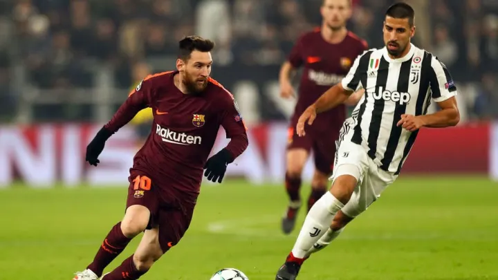
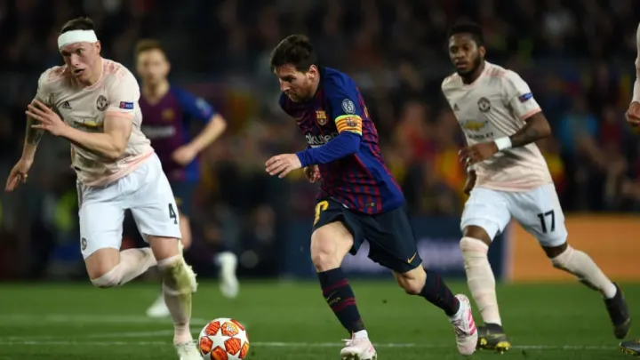
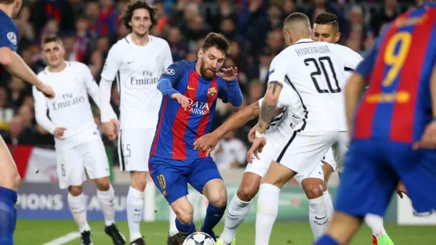
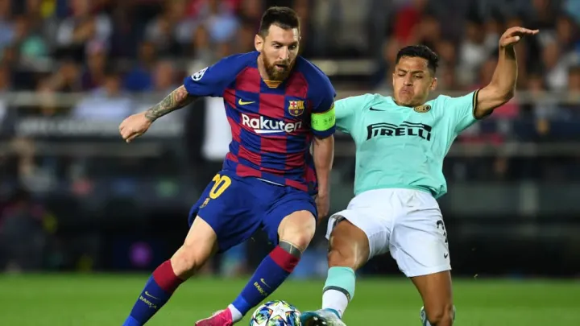
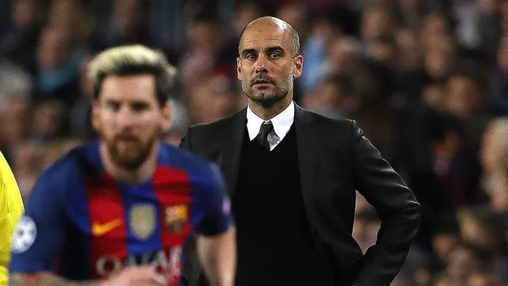
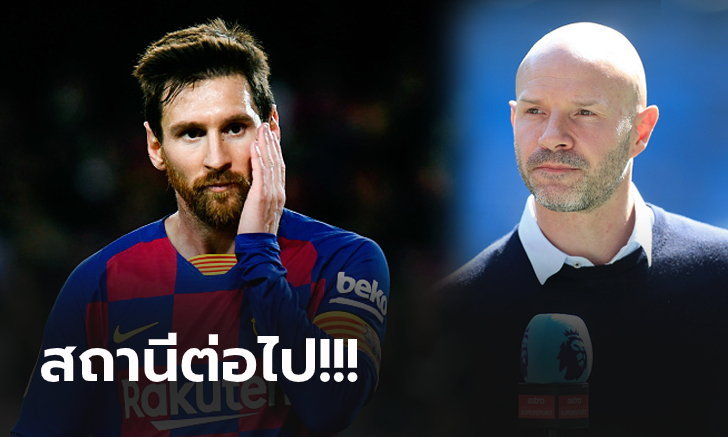

[RANKING] ได้เวลาลงยานแม่! ส่อง 5 สถานีต่อไปของ "เมสซี่" หากอำลา บาร์ซ่า
ลีโอเนล เมสซี่ กำลังถูกสื่อกระพือข่าวอย่างหนักว่าอยากย้ายออกจาก บาร์เซโลนา หลังจากที่อยู่รับใช้ทีมมาอย่างยาวนานและเริ่มอิ่มตัวจนไม่รู้จะอิ่มยังไงแล้วรวมถึงหลากหลายปัญหาที่ต้องเผชิญในช่วงหลัง
5.ยูเวนตุส

นอกจากการย้ายมา ยูเวนตุส จะเป็นการการันตีแชมป์เซเรียอากลายๆ แล้ว หากดีลนี้เกิดขึ้นจริงแฟนบอลก็น่าจะฟินไปตามๆ กันเนื่องจากการจะได้เห็น ลีโอเนล เมสซี และ คริสเตียโน โรนัลโด เล่นทีมเดียวกันเสียที
แต่ถึงกระนั้นสภาพคล่องของ ยูเว่ เองก็ไม่ค่อยสู้ดีนักถึงกับมีข่าวที่จะปล่อย โรนัลโด ออกจากทีมเพื่อลดภาระทางการเงินเช่นกัน

แม้จะตกต่ำลงในช่วงหลังแต่ด้วยชื่อของ แมนเชสเตอร์ ยูไนเต็ด ที่เป็นหนึ่งในแบรนด์กีฬาที่ใหญ่ที่สุดของโลกพวกเขาก็มีศักยภาพพอจะดึง เมสซี เข้ารังได้
ในตอนนี้ ปีศาจแดง สร้างทีมด้วยการมีนักเตะอายุน้อยเป็นแกนกลางของทีม แต่การได้ เมสซี เข้าทีมเพื่อความที่ห่างหายมานานก็ไม่ใช่เรื่องที่ผิดอะไร
3.ปารีส แซงต์-แชร์กแมง

หากย้ายไป ปารีส แซงต์-แชร์กแมง เมสซี จะได้กลับไปทำงานร่วมกับ เนย์มาร์ อีกครั้ง รวมถึงดาวรุ่งพุ่งแรงอย่าง คีเลียน เอ็มบัปเป ที่จะทำให้เกิดหนึ่งใน 3 ประสานแดนหน้าที่ดีที่สุดขึ้นมาแน่นอน
แต่หากไม่ใช่ในรายการ ยูฟ่าแชมเปี้ยนลีกส์ การเล่นในลีกเอิงก็อาจจะเป็นเรื่องที่น่าเบื่อไม่น้อยเพราะพวกเขาแทบไม่มีคู่ต่อสู้ที่สูสีเลย
2.อินเตอร์ มิลาน

นี่เป็นอีกหนึ่งในตัวเลือกที่มีโอกาสเป็นไปได้มากๆ เพราะ อินเตอร์ คือทีมใหญ่ที่เปี่ยมไปด้วยประวัติศาสตร์และตอนนี้ก็ยังมีเม็ดเงินมหาศาลอีก
หากย้ายมาร่วมทีม งูใหญ่ เมสซี เองก็น่าจะได้มีโอกาสมาวัดฝีมือกับ คริสเตียโน่ โรนัลโด้ คู่แข่งตลอดกาลอีกครั้ง และการพา อินเตอร์ โค่น ยูเวนตุส ใน เซเรีย อา ก็เป็นเป้าหมายที่น่าท้าทายไม่น้อย
1.แมนเชสเตอร์ ซิตี้

มีเหตุผลมากมายที่ เมสซี จะอยากย้ายมา แมนเชสเตอร์ ซิตี้ ทั้งการมี เป๊ป กวาร์ดิโอลา อดีตนายเก่าและโอกาสที่จะประสบความสำเร็จทั้งในอังกฤษรวมถึงเวทียุโรป
แต่ ซิตี้ เองก็อาจจะไม่ได้ต้องการ เมสซี ขนาดนั้นและครั้งสุดท้ายที่พวกเขาจ่ายเงินมากกว่า 20 ล้านยูโรซื้อนักเตะก็เกิดขึ้นตั้งแต่ปี 2013 ขณะที่ตอนนี้ เมสซี ก็อายุ 33 แล้ว
ทีมเดียวเท่านั้น! "มิลส์" ชี้เป้าหมายของ "เมสซี่" หากย้ายจาก บาร์เซโลน่า
แดนนี่ มิลส์ อดีตแข้งดังแห่งวงการลูกหนังอังกฤษ เชื่อว่าถ้า ลีโอเนล เมสซี่ คิดย้ายออกจาก บาร์เซโลน่า จริงตามข่าวลือ ทีมเดียวที่จะเซ็นสัญญาด้วยคือ แมนเชสเตอร์ ซิตี้ แชมป์เก่าในศึก พรีเมียร์ลีก เท่านั้น
"สมมติถ้า เมสซี คิดจะย้ายออกจาก บาร์เซโลน่า จริงตามที่กำลังเป็นกระแสอยู่ตอนนี้ ทีมเดียวที่จะได้ตัวเขาไปก็มีแค่ แมนฯ ซิตี้ เท่านั้นแหละ" มิลส์ กล่าว
"เหตุผลสำคัญก็คือความสนิทสนมกันระหว่าง เมสซี่ กับ เป๊ป กวาร์ดิโอลา ซึ่งเป็นโค้ชที่รู้จักและสามารถดึงศักยภาพของศิษย์รักคนนี้ออกมาได้อย่างเต็มที่นั่นเอง"
"และในขณะที่สื่อหลายเจ้าพยายามโยงชื่อ เมสซี่ เข้ากับความต้องการของคู่อริร่วมเมืองอย่าง แมนเชสเตอร์ ยูไนเต็ด แต่ผมวิเคราะห์แล้วว่า มันไม่มีทางเป็นไปได้เลย"
"อีกอย่างที่น่าสนใจคือถ้ามีการเซ็นสัญญากับ แมนฯ ซิตี้ จริง เป๊ป เองก็คงต้องรื้อแท็คติกของตัวเองใหม่เพื่อสนับสนุน เมสซี่ ด้วยเช่นกัน"